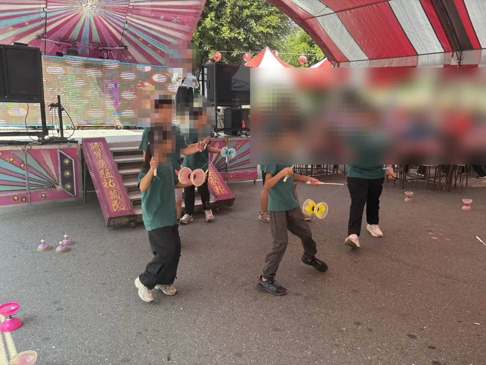
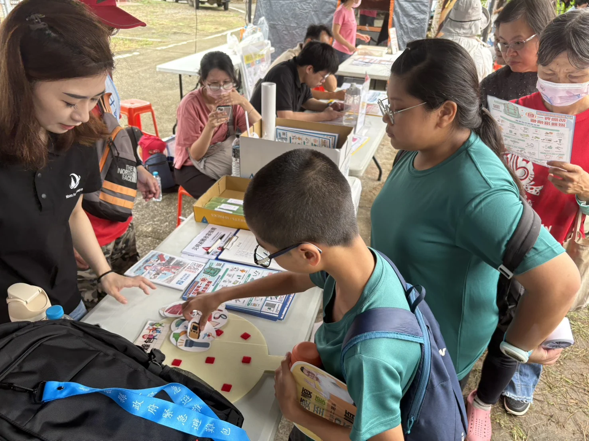

03｜走進社區
把平日的練習，
帶到真正的舞台
活化計畫原本就以展演作為學習的一部分。115學年度目前已留下石龍宮社區活動與中寮鄉文化活動中的扯鈴演出紀錄，讓課後培力從校內練習延伸到真實公共情境。

石龍宮社區活動
團隊在公開場合完成扯鈴表演，把平日練習轉化為舞台經驗。

中寮鄉文化活動
學生受邀展演，面對不同觀眾與場域，學習在真實情境中完成表演。

社區學習
除了展演，也透過活動闖關與在地參與累積生活經驗。
從留下來學習，到走出去被看見
115版網站目前最清楚的一條故事線，就是「穩定陪伴 → 多元探索 → 動手實作 → 社區展現」。後續若有更多校內外展演、作品或學生學習紀錄，將持續補入。